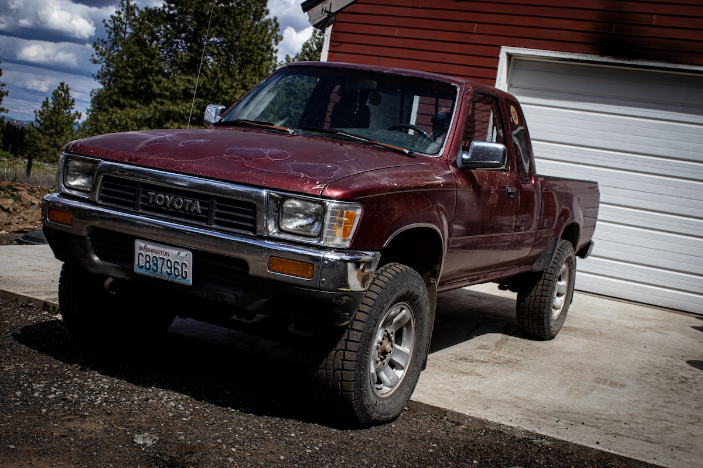
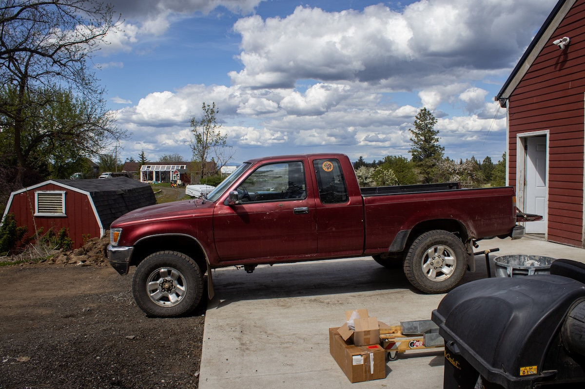
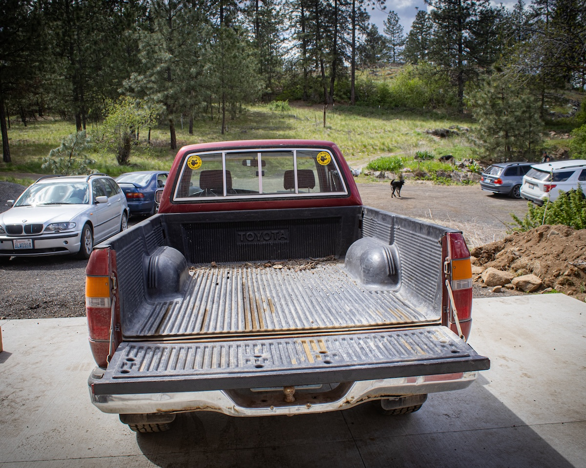
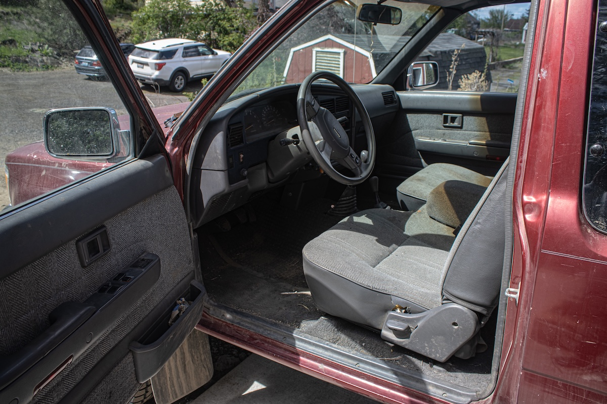
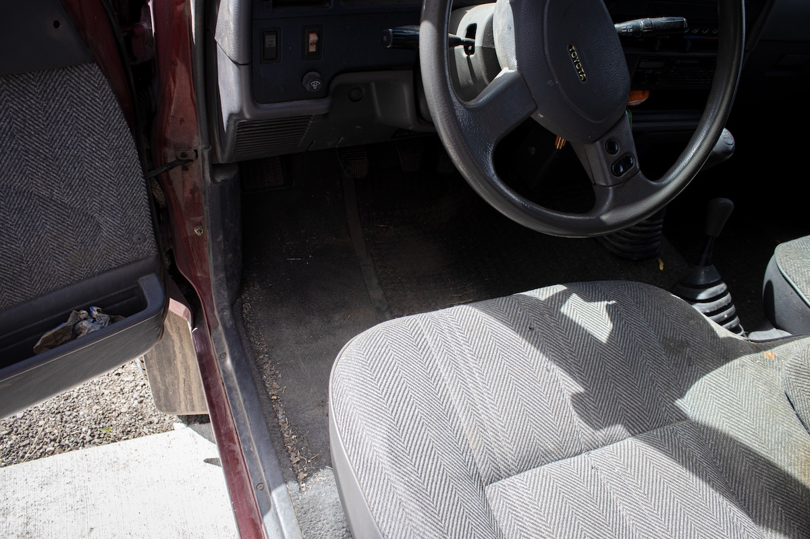

TOYOTA – BEFORE
A visual walkthrough of how this Toyota truck looked the day it came home. Dirt, dents, and decades of life.






A visual walkthrough of how this Toyota truck looked the day it came home. Dirt, dents, and decades of life.